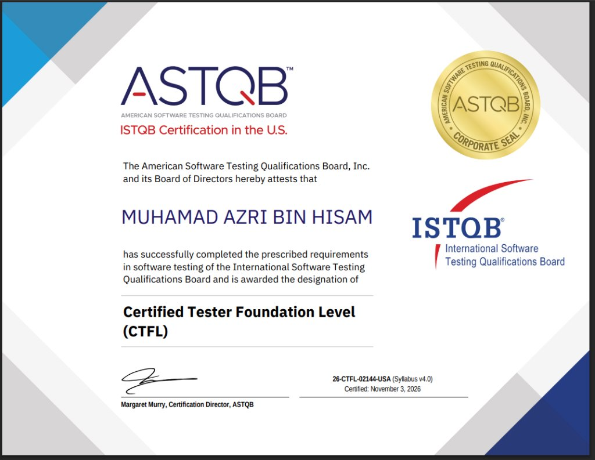
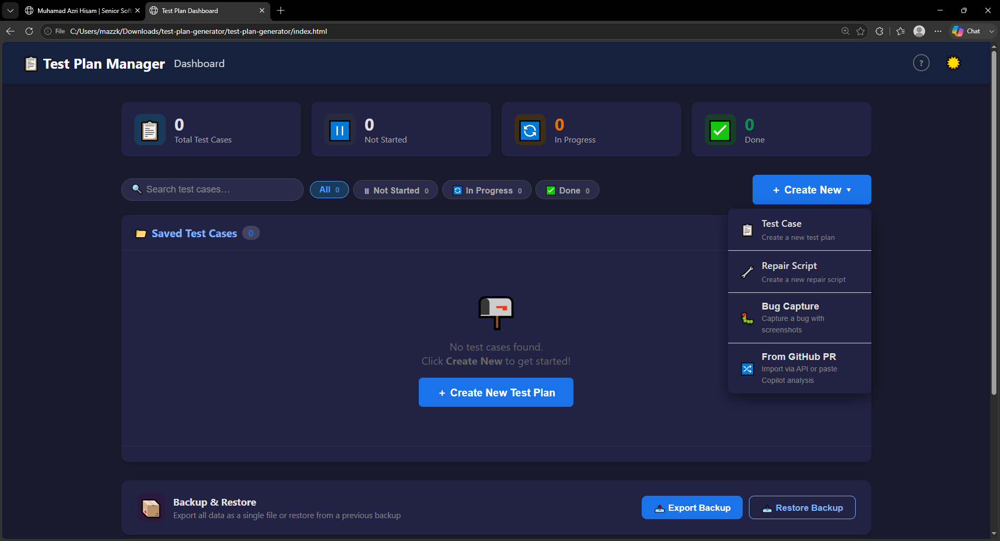
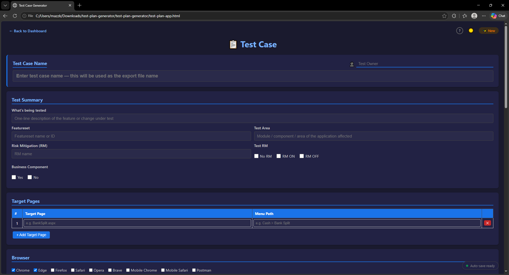
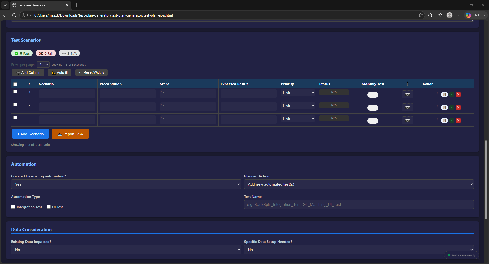
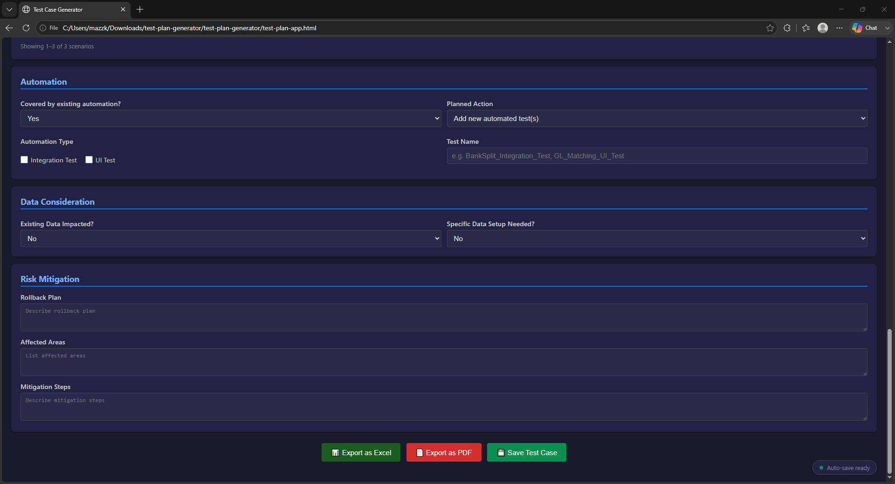

Senior Software Tester with 7+ years ensuring software quality through meticulous Manual and API testing. I find the bugs before your users do.
Years Experience
APIs Tested
Projects Delivered
Expert in RESTful API validation using Postman, ensuring robust backend integrations before UI development.
Proven track record of managing global UAT sessions, aligning stakeholders across multiple countries.
Leveraging LLMs and prompt engineering to automate test plan generation and optimize testing workflows.
I specialize in Manual and API testing, ensuring software quality with a meticulous and detail-oriented approach. I thrive on testing complex systems, enjoy challenges, and have a strong passion for learning new technologies.
I'm actively growing into test automation, applying my manual testing foundation to build structured, repeatable testing processes with modern tools and frameworks.
Beyond automation, I'm exploring how AI and LLMs can augment QA workflows — from generating comprehensive test scenarios from requirements to evaluating AI system outputs. I'm learning prompt engineering, AI-assisted API testing, and evaluation frameworks to stay at the forefront of the evolving testing landscape.
const tester = {
name: "Muhamad Azri Hisam",
specialization: "Manual, API & AI-Augmented Testing",
certification: "ISTQB® CTFL v4.0 (ASTQB)",
tools: ["Postman", "JIRA", "Oracle SQL", "Prompt Engineering"],
status: "Building multiple AI projects"
};
Official industry qualifications validating standardized software quality engineering methodologies and defect prevention rigor.
Attests certified mastery of standardized testing principles, test analysis and design techniques (black-box, white-box, and experience-based), defect lifecycle management, and seamless quality assurance integration within modern Agile and CI/CD pipelines.

Ensuring quality for Exact Online [WEB] through comprehensive sprint, regression, and end-to-end testing in an Agile environment.
Current RoleA comprehensive online booking and administrative management system for a premier ATV adventure park in Melaka. Features dynamic package selection, real-time gallery sync, and an advanced 2-step booking wizard for the admin dashboard to streamline operations.
An elite operations platform designed for the futsal ecosystem. It serves as a tactical command center allowing users to manage squads, orchestrate matches seamlessly, and track global rankings in real-time with an emphasis on high-performance UI/UX.
An offline, browser-based utility engineered to streamline QA workflows. It empowers testers to instantly create, manage, and export structured test plans to Excel. Features include real-time auto-save via local storage, CSV scenario imports, and a built-in canvas tool for bug screenshot annotations.




I developed a custom Test Case Generator Web App that uses AI to automatically create test scenarios from PR changes and Acceptance Criteria.
Read MoreFinding bugs at the UI level is expensive. My strategy focuses on rigorous API testing to ensure core logic is flawless.
Read MoreManaging UAT across different time zones requires clear communication, robust test data, and a user-centric approach.
Read MoreInterested in working together? Let's connect.